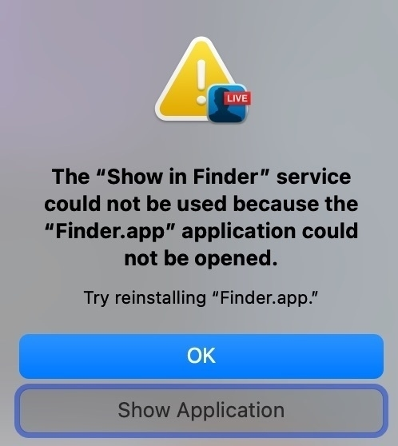

Menschenkette in der Bad Kissinger Fußgängerzone am Dienstag, den 18.1.22, 18.30 bis 19.00 Uhr auf dem Marktplatz. Bitte mitbringen: FFP2-Maske, Kerze, Schal oder Tuch.
This computer wants to be replaced by a Linux desktop even way before the ordered Linux laptop arrives, doesn’t it?

Oho, ich brauch also immer noch keinen Test um in ein Restaurant Essen zu gehen. Yeah.
Aus der Kiste “Regeln, die mich nicht betreffen.”
🙄

I’m just thinking out loud about merging hammelblog.de into byzero.de and splitting things up using categories. I don’t see an advantage in having two separate sites except for the very nice domain.
It is going to be an easy export and import thanks to @manton’s fresh blog archive file support which makes this super easy for me.
I’m not sure yet since this would result in a mixed language site on byzero.de.
But I might enjoy switching to using English anyways. There are some things important to write in German though.
micro.blog is 99.9% English, but not the exclusive audience. I forward a lot of the german things to Facebook.
hmhmhmhmhhmmmm 🤔
In other news, I’m playing around with omg.log and think muhh.omg.lol feels nice and fun. I might use it for markusheurung.de since I prefer my own domain(s).


Vorhin habe ich die heute und morgen laufende Passantenbefragung in Hammelburg mitgemacht.
Die Fragen drehen sich zu 90% um den eigenen Konsum. Wo und wie man den in Hammelburg oder eben nicht macht. Und warum.
Meiner Meinung nach nicht das wichtigste worum sich eine innerstädtische Entwicklung drehen sollte, aber nun gut.
Ein Schmankerl gab’s aber: in einer der letzten Fragen wurde danach gefragt, was man für die wirkungsvollste Maßnahme hält, um die Innenstadt aufzuwerten. Meine Antwort ist darauf “Fußgängerzone”. Die Fragestellerin musste dann lachen und verriet, dass das die häufigste Antwort sei, die heute darauf gegeben wird.
Ich bin auf die Ergebnisse gespannt.
Mehr zu ISEK auf der Homepage der Stadt Hammelburg.
Die Befragung findet heute und noch morgen am Marktplatz und vorm Müller am Einkaufszentrum statt und dauert vielleicht 5 Minuten. Kann ich nur empfehlen, seine Meinung und Feedback so mit einzubringen.
Today’s reminder – rebeccatoh.co
Let’s intentionally choose to see the fun in life today.


I’ve been using a Pomodoro timer – Session – for the last few days and I’m kicking my ass I didn’t start using this technique earlier. But I’m very happy how well this working with my brain.
Manton did something beautiful with Drummer and micro.blog
Thanks, @manton, I love this!
I can now write in this nice web-based outliner, hit a button and this shows up in my blog hosted on micro.blog.
Playing around with Drummer the last couple of days (very superficially), I was already tempted to switch my blog to this way of writing and posting, but now I didn’t need to. Phew.
Manton describes how this works and provides an explainer video.
Dave Winer is super happy with this and posted a podcast episode about the integration - with a lot of deserved praise!
So let’s hope that this post gets simply published 😄
It worked!
Even updates to this part of the outline, aka the post, get published in the original post.
Zwei Monate sind vergangen, in denen wir mehr oder weniger Ruhe hatten und alle hoffentlich viel Urlaub und Erholung finden konnten.
Nächste Woche beginnt bei uns wieder die Schule und wir dürfen unsere Kleinen wieder vermehrt die Straßen unsicher machen lassen, wie man so schön sagt.
Tatsächlich aber sind es die Straßen, der Überfluss an Autos und die schwache Fußgänger- und Fahrradfreundlichkeit, die es für alle und vor allem unsere Kinder gefährlich macht sich selbstständig durch die Stadt zu bewegen.
Deswegen haben wir beschlossen, uns mit der nächsten Fahrraddemo in Hammelburg den Kidical Mass Aktionstagen anzuschließen, die kommendes Wochenende überall in Deutschland stattfinden.
Was ist die Kidical Mass?
Die Kidical Mass ist eine weltweite Bewegung. Seit 2017 gibt es sie auch in Deutschland. Bei bunten Fahrraddemos erobern Radfahrende von 0 bis 99 Jahren die Straße.
Kinder und nachhaltige Mobilität sowie lebenswerte Städte stehen im Fokus. Die Kidical Mass hat die Vision, dass sich alle Kinder und Jugendliche sicher und selbständig mit dem Fahrrad bewegen können. Sie gibt den Kindern eine Stimme im Verkehr, zeichnet ein positives Zukunftsbild, vernetzt und mobilisiert Alt und Jung über die Grenzen der Radszene hinaus.
„Platz da für die nächste Generation!“.
Beim Kidical Mass Aktionswochenende 2021 im Rahmen der Europäischen Mobilitätswoche und zum Weltkindertag wollen wir wieder an ganz vielen Orten in Deutschland, Europa und rund um den Globus für fahrrad- und kinderfreundliche Städte demonstrieren.
Das Aktionsbündnis richtet folgende Forderungen an die kommende Bundesregierung:
Die Forderungen des Kidical Mass Aktionsbündnis an die neue Bundesregierung lauten:
- Sicheres Schulradwege Netz bis 2030
- Schulstraßen und verkehrsberuhigte Bereiche vor Schulen und Kitas
- Stetige jährliche Finanzierung mit konkreten Zielvorgaben an die Kommunen
- Kinderfreundliches Straßenverkehrsrecht, v.a.
- Tempo 30 als Regelgeschwindigkeit innerorts,
- geschützte und baulich getrennte, breite Radwege an Hauptstraßen,
- Spielstraßen,
- Wohngebiete ohne Durchgangsverkehr,
- Vision Zero (null Verkehrstote)
Dem schließen wir uns an [ˆ1] und werden nächsten Sonntag, 19.09. um 14:30 Uhr mit der 3. Fahrraddemo in Hammelburg starten.
Start ist wieder der Parkplatz Bleichrasen in Hammelburg, Ziel ist der Marktplatz.
Die Tour wird dieses Mal etwas länger und verschiedene Ecken von Hammelburg erreichen. Sie ist ca. 6 km lang und ist für Jung und Alt gut fahrbar. Wir fahren sowieso langsam (6-8 km/h), so dass alle gut und vor allem sicher mitfahren können. Wir werden wie die beiden letzten Male besonders auf uns aufpassen. Die genaue Tour werden wir noch extra bekannt geben.
Gebt euren Familien, Bekannten und Freunden Bescheid, kommt und habt zusammen mit uns Spaß durch Hammelburg zu fahren und gemeinsam für ein fahrradfreundliches Hammelburg für uns und vor allem für die Kinder zu demonstrieren!
[1]: Auch wenn wir in Hammelburg natürlich etwas andere Probleme haben. Die Sache bleibt dieselbe.
How a distributed team of security people use Obsidian as a shared knowledge system utilizing git as the storage backend.
We do it quite similarly at @freistil but not as sophisticated, yet!
Alles was ich will
Ist endlich nix mehr wollen
Ich bin satt geboren
Mein Glas war extra-voll
Keine Wünsche offen
Sowas gibt’s, jawoll
Ich hab’ mich dem Leben ergeben
Und ich find’ mein Schicksal toll
Dendemann – Keine Parolen


Ich lese gerade zum Aufwärmen nochmal ein wenig im Nationalen Radverkehrsplan 3.0.
Ein zentrales Ziel diese Plans ist Sicherheit. Die Beschreibung möchte ich hier einfach mal zum lesen mitgeben.
Leitziel: Leitbild Vision Zero im Radverkehr
Das Leitbild Vision Zero ist von zentraler Bedeutung in der Radverkehrsförderung: Nur wenn Radfahren deutlich sicherer ist, werden mehr Menschen im Alltag und in der Freizeit Rad fahren.
Für die Sicherheit von Radfahrenden ist eine hochwertige sowie fehlerverzeihende Infrastruktur wichtig. Insbesondere Knotenpunkte müssen sicher und verständlich gestaltet werden.
Ebenso bedeutsam ist es, in Mischverkehren Geschwindigkeitsunterschiede zwischen den Verkehrsteilnehmenden zu reduzieren.
Letztlich werden Gefahrensituationen auch dadurch verringert, dass alle Verkehrsteilnehmenden sich intuitiv richtig verhalten.
Eine Mobilitätsbildung „von klein auf“ sorgt dafür, dass sich Kinder und Erwachsene sicher und routiniert im Straßenverkehr bewegen.
Zudem braucht es einen Kulturwandel im Umgang mit anderen Verkehrsteilnehmenden. Schutzbedürftige Personen müssen besonders berücksichtigt werden.
Ein gutes Verkehrssicherheitsmanagement bildet die Grundlage für das Leitbild Vision Zero. Radfahrende müssen sich im Verkehr sicher fortbewegen können.
Jeder einzelne Satz ist ein Ansatz, wie man die aktuelle Situation in Hammelburg besser gestalten kann.
Nicht Fahrräder ausschliessen ist der Weg, sondern sie zu untersstützen und zu sichern.
Ihr lieben,
ich bin schon sehr auf morgen gespannt und freue mich!
In den letzten Tage habe ich doch sehr viele Gespräche geführt, viel Input bekommen und noch mehr gelernt.
Ich hoffe wir können das morgen gemeinsam genau so auch tun!
Damit das gut klappt, nochmal ein paar Hinweise, vor allem auch, da das Landratsamt sich heute noch gemeldet hat und es noch Hinweise des Ordnungsamts Hammelburg gibt:
- Auf unserer Tour fahren wir kurz durch die Baustelle in der Bahnhofstrasse. Dort ist an der Kreuzung Wankelstraße/Dalberstraße grober Schotter, der vorsichtig durchfahren werden muss.
- Pro 25 Teilnehmer brauchen wir einen Ordner. Ich bringe Material mit, um diese als solche zu kennzeichnen. Dafür brauchen wir Freiwillige!
- Für die Teilnehmer gilt Maskenpflicht; hiervon ausgenommen sind die Versammlungsleitung während Durchsagen und Redner während Redebeiträgen.
- Es sind keine Waffen und Gegenstände, die als Waffe taugen erlaubt.
- Ich gehe davon aus, dass wir diesmal von der Polizei begleitet werden. Diese regelt den Verkehr.
Auch wenn’s jetzt ein wenig förmlicher wirkt, gehe ich davon aus, dass wir wieder eine schöne, friedliche und hoffentlich sehr spaßige Fahrradtour und eine ergiebige Diskussion zum Abschluss hinbekommen.
Bis morgen!
Das sollten die Wähler*innen wissen, die jetzt in ihrer eigenen Bräsigkeit wie immer CDU wählen wollen, weil man sich sicher sein kann, dass dann im richtigen Moment schon das richtige passieren wird: dafür steht Laschet nicht. Er steht für das weiter so, das süße Nichtstun, und das nicht mal aus dem Glauben heraus, damit das richtige zu tun, sondern einfach aus der blanken Angst etwas falsch zu machen. Wer nichts tut, begeht auch keine Fehler, ein Grundsatz, der uns während der Pandemie einige Menschenleben gekostet hat. Und bei Laschet ist er gepaart mit der Überheblichkeit, er werde schon das richtige tun, weil sonst wäre er ja nicht Ministerpräsident/Bundeskanzler whatsoever geworden. Deckt man diese Muster auf, flippt er gleich völlig aus. So einen Menschen will niemand wählen. So einen Mann sollte niemand wählen.
Die unerträgliche Bräsigkeit des Armin Laschet und seiner Partei - Couchblog
Wir lassen wieder die Räder rollen

Unsere als kleine geplante erste Fahrraddemo vor ein paar Tagen war ein Kracher. Die Schätzungen gingen in die 100 Teilnehmer, auf einem Video konnte ich rund 80 Leute zählen. Ich hatte im allerbesten Fall mit vielleicht 30 Leuten gerechnet. Irre!
Ein großes Dankeschön an alle die da waren! Ihr habt einen großen Beitrag geleistet um zu zeigen, wie wichtig uns ein fahrradfreundliches Hammelburg ist.
Und wie es die Redner und Teilnehmer so deutlich gesagt haben: “Wir müssen das wiederholen!”. Und das tun wir.
“Für ein fahrradfreundliches Hammelburg”
Am Samstag, 17.07.2021 versammeln wir uns um 10 Uhr wieder am Bleichrasen um die Fahrradtour durch Hammelburg zu wiederholen. Die Route ist wieder dieselbe, das Verfahren auch: wir fahren gemeinsam auf unseren Rädern durch die Stadt und werden die Kissinger Straße hoch schieben.
Das Ziel der Tour ist dieses Mal der Viehmarkt, wo wir eine offene Diskussion anregen wollen: jede die eine Meinung, eine Idee oder einen Beitrag teilen möchte, kann ans Mikro kommen und dies tun.
Ich werde diese Diskussion moderieren und wir werden uns kümmern, dass wir im Anschluss auch erste Vorschläge zur Verbesserung an die Stadt weitergeben können.
Wenn ihr teilnehmen und uns unterstützen wollt, kommt mit also mit eurem Rad, gerne mit Hänger und Plakaten verziert und fahrt mit.
Auch dieses Mal habe ich bis jetzt noch keine Rückmeldung vom Landratsamt oder Polizei bekommen. Die Einhaltung der Hygienieregeln sind aber selbstverständlich: wir tragen Masken, wir halten 1,50m Abstand. Wer am Mikro redet, kann die Maske abnehmen.
Ich freue mich wieder sehr mit euch durch Hammelburg fahren zu dürfen und ganz besonders auf ein weiteres Klingelkonzert!
Lieben Dank und herzliche Grüße,
Markus Heurung
PS: wer nicht zu Facebook mag und kommende Einladungen und Updates zum Thema fahrradfreundliches Hammelburg nicht verpassen will, ich habe einen einfachen Newsletter eingerichtet, an den ich diese Nachrichten genauso schicken werde. Wer diese Nachrichten also direkt per Email bekommen will, kann sich unter buttondown.email/fahrradfr… bei diesem Newsletter anmelden.
I’m quite happy with the second vaccination jab yesterday. The cross vacccination with Astra first, Biontech second seems to not only include good working 5G, but also NTP. Don’t need a watch anymore!


My kinda crowd!
/HT @hackr
Die Fahrraddemo am Samstag war in meinen Augen – auch dank sehr viel positivem Feedback – ein voller Erfolg.
Den Rest des Wochenendes danach hab ich abgeschaltet 😴
Ich bin gerade dabei etwas mehr zu schreiben, es wird auch sehr bald eine Wiederholung geben, noch vor oder am 19.07. zur relevanten Stadtratssitzung. Save the date!
Ein Video, das mir ein Freund netterweise zur Verfügung gestellt hat, möchte ich gleich teilen. Es fängt sehr viel von der guten Stimmung vom Samstag ein!
Danke nochmal an alle.
Liebe Freundinnen und Freunde des gepflegten Radfahrens und Fußgehens,
Die Hammelburger Verwaltung hat nach einem erneutem Unfall in der inneren Kissinger Straße den kurzen Dienstweg eingeschlagen, und verspricht sich aus einer kurzfristigen Lösung mehr Sicherheit.
Leider sind sie dabei dem Weg gefolgt, der auf die vollen Kosten der Radfahrer*innen in Hammelburg geht und die Durchfahrt durch die Kissinger Straße Richtung Kreisel für Fahrräder komplett sperrt. Als Ausweg wird Schieben oder ein Umweg durch die Gassen vorgeschlagen.
Diese Entscheidung soll am 19.07. in einer Stadtratssitzung besprochen und vermutlich auch beschlossen werden.
Da dieser nur zu Lasten der Radfahrer geht und keinerlei Rücksicht von Kraftfahrzeugen abverlangt, müssen wir Radfahrer*innen uns Gehör verschaffen, damit Hammelburg endlich eine fahrradfreundliche Stadt wird die auch die schwächeren Verkehrsteilnehmer einbezieht.
Deshalb lade ich mit vielen Unterstützern zu einer Fahrraddemonstration durch Hammelburg ein.
“Für ein fahrradfreundliches Hammelburg!”
Start und Treffpunkt ist am Samstag, der 03.07.2021 um 9:30 Uhr am Parkplatz Bleichrasen. Wir werden von dort aus eine kleine Fahrradtour durch Hammelburg machen, und vor allem gemeinsam und “demonstrativ” durch die Kissinger Straße unsere Räder schieben. Voraussichtliches Ende wird gegen 10:30 Uhr am Marktplatz sein.
Wenn ihr teilnehmen und uns unterstützen wollt, kommt mit eurem Rad, gerne mit Hänger und Plakaten verziert und fahrt mit.
Noch habe ich keine Rückmeldung vom Landratsamt oder Polizei bekommen. Ich erwarte aber aber die Einhaltung von Hygenieregeln, die ich gleich von vorneherein für uns so vereinbaren möchte: wir tragen Masken, wir halten 1,50m Abstand. Falls eine Rede gehalten werden sollte, darf die Redner*in die Maske abnehmen.
Ich freue mich auf eine schöne und friedliche Minitour durch Hammelburg mit euch!
Herzlichen Dank und liebe Grüße,
Markus Heurung

Vor der Pandemie habe ich mir mal vorgenommen, Rabatz zu machen und wurde bzw. hab mich lange ausgebremst das zu tun.
Heute gab’s einen wichtigen Schritt: Ich hab meine erste Demo angemeldet. 😆
Oho, I’m seeing twitter replies to my blog post on hammelblog.de integrated by micro.blog? Including push notifications in the app?
What is this nice new magic, @manton?
Lissabon abgeriegelt, in GB wieder mehr als 10000 Neuinfektionen an einem Tag, in Australien bestätigte Ansteckung durch “Vorbeigehen”.
Delta kommt außerhalb von Indien voll an.
Wir haben sehr großes Glück, dass die Zahlen der Neuinfektionen bei uns gerade so in den Keller purzeln. Ich find’s gut zu sehen, dass das Gesundheitsamt in meinem Landkreis sich gerade um neue Mitarbeiter zum Tracing kümmert. Die werden gebraucht. Vorbei ist diese Pandemie noch lange nicht.
Morgen abend Spiel Portugal gegen Deutschland in München, 14000 Zuschauer.

Today is the day to decide. Linux laptop or new MacBook Pro? Let’s see if I succumb to the shiny hardware and if macOS gets fixed or if it becomes Linux on the desktop to work with again after more than 10 years.
I’m a bit nervous :) #wwdc


Heute morgen habe ich ein ausgezeichnetes und üppiges Muttertagsfrühstück beim Müller Weinhotel geholt und dabei Stadtrat Martin Wende getroffen, der mich auf was besonderes hinwies.
Das Rathaus, das ohne Haus auf der linken Seite kräftig in der Morgensonne glänzte.
Ein großartiger Anblick, der nur von kurzer Zeit so möglich sein wird, weil in wenigen Monaten der Anblick durch das neue Bürgerhaus nicht mehr möglich sein wird.
Ich musste prompt an Tobias schöne Idee und Vorschlag denken, an der Stelle kein Bürgerhaus zu bauen, sondern einen offenen Platz mit Bäumen anzulegen. Was für ein toller Ort das gewesen wäre.

I'm pondering my work laptop options.
This is just about my work machine. Private things I still enjoy a lot on iOS which still provides a lot of value. But MacOS for work just isn’t a requirement anymore while a proper Linux would give so much.
My little demands would be:
- light form factor (11” old Macbook Air)
- upper demand on CPU
- USB-C for two external displays
hey, #linux bubble, which hardware would you recommend?
A simple bookmarklet to post links to Micro.blog based on the current page in your desktop browser. Supports text selections.
Source: Micro.blog Posting Bookmarklet – Colin Devroe
neat!
let’s see if I can modify it to support quotebacks.
works in my mobile browser as well.
⭐️ The Fight You Don’t See – Rhoneisms
I feel seen. Thanks, @patrickrhone. It helps.
I need to bring back some color into my life. So, here’s a new profile pic. Still no need to lower any eyebrows.

Wir haben hier heute “Daheimtag” im Wechselunterricht.
Ich musste gerade das Video der Augsburger Puppenkiste vorspielen, dass den Kindern gestern zur Begleitung des Selbsttests gezeigt wurde. Das kam auch bei den kleinen sehr gut an.
Und meine Große durfte ich danach davon überzeugen, dass sie jetzt nicht einen Test machen muss. “Ich will aber, ich kann das voll gut”.
Wann mich meine Kinder am meisten positiv überraschen? Wenn ich ihnen vertraue und Verantwortung gebe.
Es wird Frühling und ich brauche die schöne Abwechslung meine Fotoknipserskills zu schleifen. Mein oberer Hinterhof lieferte dafür heute morgen bei warmen Sonnenschein und Vogelgezwitscher gute Unterhaltung.
Ich mag’s hier.


Mit wachsender Besorgnis beobachten wir die derzeitige Entwicklung der Pandemiesituation. […] Weder gibt es ein definiertes Ziel noch eine klare Strategie der Pandemiebekämpfung. Wichtige Eindämmungsinstrumente werden nach wie vor nicht wirksam eingesetzt: Kontaktnachverfolgung, Teststrategie und Impfungen. Nach einem Jahr Pandemie, mit einer zermürbten Bevölkerung und einer beschädigten Wirtschaft, wurde Deutschland so in eine dritte, allen Projektionen nach sehr heftige, Pandemiewelle gesteuert.
Das ist das Urteil von 14 Wissenschaftler*innen, die sich unter No-COVID zusammengetan haben und eine mittlerweile umfassende Strategie inklusive Maßnahmepaketen entwickelt haben. Lest ihre aktuelle Stellungnahme. LEST. DAS.
Auf diesen zwei Seiten findet sich mehr Strategie als in diesem Ding, was die Regierung und die große Mehr der Ministerpräsidenten machen – ich weiß nicht wie ich das noch nennen soll.
Im Nebel gestochere vielleicht, wenn ich Unfähigkeit unterstelle.
Rücksichtslos und menschenverachtend sein, wenn es Böswilligkeit wäre.
Ich kann auch nicht nachvollziehen, wieso “die Wirtschaft” das so per Lobby einfordern sollte. Sogar Mallorca führt gerade Ausgangssperren ein, weil ihnen klar ist, dass es sich nicht lohnt für das vermeintliche Ostergeschäft den Schaden durch noch schneller steigende Infektions-, Krankheits- und Todeszahlen hinzunehmen.
Ich verstehe nicht mal mehr, warum sie so handeln.
Den eigenen Arsch zu retten, Blosstellung vermeiden und sich ekelig rauswinden, scheint mir das einzige zu sein, was diesen Schlag Politiker gerade motiviert. Abgesehen von der tief sitzenden Korruption in der CDU/CSU.
Einer der wenigen Lichtblicke dabei: die Chance, dass die Grünen die Kanzlerin stellen, steigt immer mehr.
Ein anderer Hoffnungsschimmer: Menschen beginnen sich von unten zu organisieren. Vorbei an bzw. ergänzend zu diesen verkrusteten Strukturen.
Ein Beispiel, das ich seit ein paar Tagen beobachte ist Marcus Ewald, der scheinbar rund um die Uhr dahinter ist, eine Organisation auf die Beine zu stellen, die ehrenamtliche Erstverfolger zusammenbringt, um die Kontaktverfolgung von Infizierten der Gesundheitsämter zu unterstützen.
Wenn ich wieder mehr Kraft und Hoffnung habe (es wird besser), werde ich diese in meinem kleinen Ort unterstützen.
Als Ersthelfer. Von unten.
Ich glaube mittlerweile, dass Merkel bei der letzen MPK keine Chance sah, sich dann komplett zurückzog, damit die MPs es so total versammeln, wie sie es gerade tun.
Um dann den Hebel zu haben, um #nocovid durchzusetzen.
Naja, “glauben”.
Das Zurückziehen von #AstraZeneca erinnert wirklich sehr an das Trolley Problem. Eine klare Beurteilung ist überhaupt nicht einfach.
Macht nur noch deutlicher, dass der klassische Anwendungsfall des Problems - autonomes Fahren - viel weiter weg ist als Leute einem glauben machen wollen.
Die Grundschule meiner Tocher wird weiterhin Wechselunterricht für mindestens die kommende Woche durchziehen. Wenn morgen die 7-Tage-Inzidenz von über 100 erreicht ist, wenn gleich viele Neuinfektionen wie heute gemeldet werden (17), so wird die Schule trotzdem die gesamte Woche offen bleiben.
Nur wird diese “magische” 100 frühestens offiziell gegen Ende der Woche erreicht sein, weil zum einen als Entscheidungsgrundlage nicht die Zahlen unseres Gesundheitsamtes vor Ort, sondern die des RKI genutzt werden. Diese hängen der Realität gut 10-14 Tage hinterher und ist erfahrungsgemäß auch kleiner…
Zum anderen sind die Meldezahlen zu Beginn der Woche immer niedrig. Am Wochenende macht sich das Virus nämlich locker.
Wenn man nun ein wenig die Erfahrungen der anderen Länder anschaut, die ihre dritte Welle bzw. die B.1.1.7 Welle schon reiten, dann sieht man dort, wie viel stärker gerade die Kinder in Kindergärten und Schulen infiziert werden. Hier bei uns bemerkt man das alles deutlich weniger, da Kinder fälschlicherweise immer noch als nahezu unbeteiligt an der Verbreitung des Virus und Anfälligkeit dafür gelten. Was ein sehr gefährlicher Trugschluss ist. Kinder übertragen das Virus genauso wie Erwachsene. Es gibt keinen Unterschied. Und auch sie erkranken, wenn auch etwas weniger als Erwachsene.
Dieser Artikel von Dirk Pässler fast gerade sehr gut meine Sicht zu den kommenden Wochen zusammen.
Lest den Artikel. Zieht eure Schlüsse und schaut, ob es nicht doch in eurer Macht steht eure Kinder zu Hause zu lassen, obwohl es extrem anstrengend ist. Ich verstehe jede und jeden, die es nicht können und freue mich über jede einzelne, die es schaffen.

Taking the newsletter reading experience into my own hands
I don’t like reading newsletters in my mail client. Not that I don’t like newsletters. My best information sources are newsletters. Besides blogs and twitter.
But with subscribing to more newsletters my mail client transformed even more to a place where I wanted to be contacted personally and not as part of an audience. It’s a place that might even trigger notifications and disturb me. If the sending person is important enough. No newsletter is that urgent or important. I tried filtering and putting them into out of the inbox into folders, but it was still a mix of two different mediums.
Reading and communication are two different things for me.
Just today Jason Snell posted an article how he sends newsletter into the RSS service feedbin, and that’s the same way I consume newsletters, by reading them in reeder, my feedreader of choice.
To make the emails accessible via RSS, I use the service Kill the newsletter which is a simple solution to this problem: you can create mailboxes with a unique email address which you can use to subscribe to the newsletters. This mailbox is accessible through a dedicated Atom feed you can subscribe to. That’s it.
I’ve converted almost all of my newsletter subscriptions to Kill the newsletter and my mailbox got even lighter.
I love it!
Gerade findet die Beerdigung eines mir lieben Menschen statt. Er starb durch das Virus. Einer von 81 gestorbenen Menschen aus meinem Landkreis, einer von 12573 aus Bayern, einer von 71504 aus Deutschland.
🖤
Vor genau einem Jahr1 hat Risklayer damit begonnen, Daten zu CoViD19 Infektionen direkt von den Landkreisen bzw. Gesundheitsämtern abzugreifen und tagesaktuell auf Twitter - @risklayer und in einem Google Doc aufzuarbeiten. Ich selbst habe sie bis in den Herbst noch nicht auf dem Schirm und mit handgeklöppelten Scriptablewidgets oder den Fallzahlen vom RKI meinen Informationsdurst2 zu stillen. Seit ich sie kenne machen sie das besser denn je, wenn ich’s brauche mehrmals am Tag.
Manchmal zweifle ich, ob das wirklich gesund ist, aber viel häufiger wird mir klar vor Augen geführt, dass es wesentlich besser für meine geistige Gesundheit ist und ich mich gut informiert fühle.
Danke Risklayer, ihr helft!
- “Happy Birthday!”. Ich hoffe wir werden nicht mehr allzuviele davon erleben. [return]
- It’s the third day of the DailyBloggingChallenge. Todays prompt is “Inform” [return]
Of course I struggeled on the second day to write a blog post. The whole universe aligned to make it hard on me ;)
No kidding, this day was rough. Getting woken up at 3am after only two hours of sleep by a couple hundred failed system checks is nerv wrecking. Especially if you could have mitigated most of it. But this is what happens if you don’t properly sort in announced maintenance windows of your datacenter provider and network equipment gets updated.
It would have been ok if the replication on two databases didn’t break on top of that. This created another huge pile of work. Luckily everything is alright again and our lovely customers weren’t affected.
Tonight there is another maintenance window with the next batch of routers getting updates. Not a chance I’ll be surprised again.
I'm trying to implement a blogging routine
During the last days I realised some things about myself and how I want to handle stuff differently. We all had a rough year now and for me it was really hard to deal with a lot of things. Life happened in abundance and I wasn’t able to do anything besides that. This still frustrates me a lot.
But I was able to build up a routine, almost up to the level of a proper habit. Thanks to Roamresearch’ Daily Pages I was able to set up a journaling habit. This got me to writing at least half of every day in the last year which is huge for me.
And I’m really enjoying it more and more.
The way I approach this is by setting up a daily page with a couple of questions like “How are you today?”, “What are you looking forward to today?” or “What’s your plan for today?”.
This gives me enough at hand to write a few sentences and I don’t need to find a muse or have a great idea about anything. I’ve started to push this further for other journaling or review techniques. A weekly review habit is not far!
Some of these answers get copied over into our Basecamp where we use these as a small daily report so we can keep in touch – a huge helper for our remote team. It was Basecamp with where I started answering theses daily questions. This way some of my writing already got a tiny audience.
So, in February I found Daily Blogging Challenge set up by Jeff Perry in which I commit to write a (small1) blog post every day in March. A small community gatheres in a Discord server where daily topics are organised and announced. This way all participants help each other to achieve the goal of this challenge.
Today’s topic is “Routine”.
Since I know myself enough that little pointers on what to write about lower the barrier and I want to write more in public, I accept the challenge!
- I’m happy if it’s more than 140 characters every day, but I’m fine with a photo as well [return]
Nachdem in unserem Landkreis Bad Kissingen der einzige sichtbare politische Beitrag zum Klimaschutz die Verhinderung von Stromtrassen vor der eigenen Haustür ist – ob berechtigt oder nicht ist ein anderes Thema – geben die Grünen im Kreis vor was machbar ist:
Kernziel ist es bis spätestens 2030 den gesamten Energieverbrauch für Strom, Wärme und Mobilität im Landkreis zu 100 % aus erneuerbaren Energien zu decken
Krasse Ansage, was? Wie soll das gehen?
Es ist tatsächlich nicht mal besonders schwer, Hans-Josef Fell hat das mit der Energy Watch Group schon vor einem Jahr ausgearbeitet.
Der Ausbau für eine vollständig auf Erneuerbaren Energien beruhende Versorgung erfordert nach den Berechnungen der EWG folgende Infrastruktur im Landkreis Bad Kissingen:
- Bau von 48 Windkraftanlagen (je 5 MW), zusätzlich zu den heute 33 Anlagen mit durchschnittlich 2,5 MW.
- Ausbau von PV-Dachanlagen von heute 58 MW auf zukünftig 200 MW und Ausbau der PV-Freiflächenanlagen von heute 36 MW auf zukünftig 413 MW.
- Ausbau der kleineren Bio-KWK-Anlagen (Bioenergie und grüner Wasserstoff) von heute 3 MW auf zukünftig 81 MW.
- Erhalt der gegenwärtigen Wasserkraftversorgung mit einer installierten Leistung von 1,6 MW und einer Erzeugung von etwa 5,5 MWh.
- Ausbau der Speicherkapazitäten auf 142 MWh Batteriespeicher, 812 MWh Wärmespeicher und 2.898 MWh Wasserstoffspeicher.
- Umstellung der Antriebe im Verkehrssektor (u.a. PKW und ÖPNV) auf elektrische Antriebe.
Die Studie kann man auch vollständig online lesen.
Nagut, es ist nicht einfach, weil sich keiner mit Entscheidungsbefugnis dafür interessiert, genauer gesagt in die gegenläufige Richtung arbeitet. Hans-Josef hat alle Bürgermeister im Kreis und den Landrat informiert. In diesem einem Jahr gab es nur eine Rückmeldung, vom Bad Kissinger Bürgermeister: “Schaue ich mir bei Gelegenheit mal an.” (sinngemäß).
Life happens
The indieweb is a fabulous place on the internet, maybe my most favorite one. I long saw myself as part of that community, but never made it to be active or even be able to contribute in a way that mattered.
The same happened with the lovely Drupal community. I lost touch and barely kept contact to all the nice people there.
And this nagged me to the point of feeling ashamed because I felt like I didn’t contribute at all anymore. It hurts that I can’t share my knowledge and experience on the interwebs, that I can’t create like I want to. I did before, like almost a decade ago.
But today I found a page on the indie web wiki that opened my eyes and explained this all in a shockingly simple way:
life happens is a summary expression of numerous things that people experience in their actual physical lives that suddenly take higher priority than nearly anything else (like participation in volunteer-based communities), and the IndieWeb community is here to acknowledge, accept, and be supportive of community members experiencing this.
Jup.
This page is here to acknowledge that yes, life happens, and that the IndieWeb community believes in mutual care-taking as a form of community resiliency.
The list on that page felt like a checklist where I ticked almost all the boxes.
That’s where it clicked: life is happening, all the time. I have a life.
A full one.
And that little epiphany just made me really happy. Thank you, indieweb community.
/via dominik – thank you!

Wenn eine Schülerin oder ein Schüler aber Angst habe vor Präsenzunterricht, dann werde man entsprechende “großzügige Regelungen” finden, so Piazolo.
Wenig hat mich so wütend gemacht, wie dieses Framing. Unsolidarische Drecksbande, dreckige.


Beastie Boys rocking hard in YouTube #reaction videos is my personal internet highlight in 2021 for now!


Dienstag ist Streamtag. Und deswegen werde ich heute nachmittag gegen 15.45 CEST wieder auf twitch.tv/division_byzero live streamen.
Heute will ich mal probieren die Twitch API anzapfen, um Metadaten meines Streams abzuholen, ums dann wiederum in mein auf Hugo basiertes Streamoverlay zu integrieren.
Ich freue mich wieder auf jede und jeden, die sich im Chat dort melden, mitmachen oder einfach quatschen.


Im Livestream heute: Streambranding mit einer statischen Website
Ich versuche mich schon die ganze Zeit immer wieder daran auf Twitch zu streamen und werde das weiter tun.
Auf dem Plan heute: dem Stream ein „Branding“ verpassen.
OBS - die Software, mit der ich den Stream erstelle und sende - kann mit Hilfe von Overlays gestaltet werden. Dazu kann man fertige Lösungen nehmen oder mit Hilfe eines integrierten Browsers ganze Websiten bzw. Teile einer solchen über das Video legen und damit Designelemente einfügen. Grundsätzlich habe ich das schon getestet, aber heute möchte ich mich da mal ganz konkret dran machen.
Mit dem statischen Sitegenerator Hugo, PaperCSS als CSS Framework und wahrscheinlich viel Gefummel, weil ich seit Jahren kein HTML/CSS und überhaupt kein JavaScript gemacht habe.
Los soll’s gehen um 15:45 CEST auf https://twitch.tv/division_byzero und ich freue mich immer sehr, wenn Leute in den Chat kommen und mitmachen!
Das wird lustig :)
Blogs in deutscher Sprache und Wege zum Glück – UARRR.org
Um möglichst viel zu kreieren muss man reduzieren, was einem davon abhalten könnte. Zu hoher Anspruch an Inhalte gehört dazu.
Trifft gerade mehrere Nägel bei mir auf den Kopf.
Dieser verkappte Perfektionismus blockiert so viel und das seit Jahren.
Hello world from iA Writer
This is a little test from iA Writer on my iPad using micropub.
They’ve added support for the indieweb method to publish to their nice text editor.
It seems to use the filename as the post title by default.
First I thought @roamresearch is nice and all, but I can easily rebuild the backlinking functions in my TiddlyWiki and I could.
But then I played around with it and realised backlinking is only a quarter of what makes Roam such a brain blaster. The outlining feature of every note, the listing of unlinked references, filtering and linking not only of notes but of outline points totally triggers some happy buttons in my brain.
I’m going to take this for some serious spin and see how it really fits my brain.
Statt Autoprämie: Verkehrs-Bündnis fordert #MobilPrämieFürAlle
Gemeinsame Pressemitteilung von ADFC, ACE, Allianz pro Schiene, Bike&Co, BVZF, Changing Cities, DNR, JobRad, Nextbike, Paul Lange/Shimano, Pro Bahn, VCD, VSF, vzbv und ZIV.
Am 5. Mai empfängt die Bundesregierung die Automobilindustrie zu einem weiteren Autogipfel. Die Industrie fordert Auto-Kaufprämien zur Kompensation der coronabedingten Ausfälle. Gegen diese Pläne hat sich jetzt ein breites Verbände- und Unternehmensbündnis formiert. Das Bündnis fordert eine Mobilitätsprämie für alle, mit der man beispielsweise auch E-Bikes und Bahn-Abos kaufen kann.
Nachdem ich gerade von einer kleinen Milchzapftour aufm Rad mit Kindern im Hänger kam, habe ich von dieser Aktion gelesen.
Um einen kleinen Beitrag zu leisten, ist meine Familie jetzt Mitglied des ADFC.
Und ich gönne mir jetzt endlich einen gescheiten Lastenanhänger. Kann da jemand was empfehlen?


Embracing Uncertainty – Rhoneisms
the problem is not the uncertainty. The problem is in working against the uncertainty. Of wishing and hoping and demanding that which is impossible to gain.
Reminds me of @geewiz’ daily affirmation:
I am focused on what is important now.
PSA: /0 Livestream, morgen, 15.04. 16 Uhr CEST auf twitch.tv/division_byzero
Ich will mein KellerWiki - ein @TiddlyWiki - als statische Site publizieren und dann noch ein wenig testen wie ich byzero.de - gehostet auf micro.blog - einen eigenen Style verpassen kann.
Yeah, suprise: the last weeks were rough.
I got not a lot done except moving office from my little shared office space to our nice attic and keeping the family and myself afloat. Which finally brought back some routine to this chaos.
I’ve started (again) to livestream on twitch which brings quite some joy – and some enhancement to my audio setup which should arrive soon 😏
I’m currently streaming how I’m working on my side projects which I haven’t touched for a couple of years now. I’m feeling still very amateurish and want to improve.
This is why I’m doing this again this week!


code is pottery
Thanks for a new tagline, @dominik.


The Art Of Peace
I haven’t looked into it for a long time, but since @hutaffe noticed my little book on the desk today, I picked it up again. This quote resonates quite a lot today with me.
When an opponent comes forward, move in and greet him; if he wants to pull back, send him on his way.
— Morihei Ueshiba


Warum wir ohne Wahlprogramm kommen – Junge Liste
Die Zukunft wird noch so manches Unerwartetes von uns fordern. Und vieles davon wird nicht in Wahlprogrammen gestanden haben. Dann ist es wichtig, welchen Werten die gewählten Stadträte folgen. Dann sind die Personen gefragt, nicht mehr die ihre Programme und Versprechen.
Der zweite Blogpost ist da, diesmal von Christian.

„Spectacle“ 📷 #mbfeb
Today we built two huge E‘s out of 19 electric cars. The EE stand for „erneuerbare Energien“ - renewable energies.

“Progress” 📱📷 #mbfeb
My main journal in DayOne has been mostly grey until 1 month ago - and thanks to this photo challenge my “from the internets” journal is completely blue!


Fast alle Listen werben mit Transparenz in ihren Programmen, überall wird das als wichtig dargestellt. Wirklich erklären, was das sein soll und wie weit diese Transparenz gehen soll, tut momentan noch keiner. Deshalb wollen wir auch die anderen Listen einladen, offen mit dem Aufbau und der Entstehung ihrer Werbung umzugehen. Zeigt sie euch oder zeigt sie die Handschrift einer Agentur?
Ich bin davon überzeugt, dass der Stadtrat in Hammelburg durch einen offeneren, die Bürger einbindenden Stil, noch bessere Arbeit machen kann. Sicher, es ist aufwändig seine Argumente zu einer Entscheidung zu erklären und dann auch noch öffentlich zu verteidigen. Allerdings werden sie dadurch in sich besser und auch besser verstanden. Ich bin davon überzeugt, dass die besseren Argumente bessere Resultate liefern.
– Warum wir unsere Wahlwerbung selber machen – Junge Liste
Auch deswegen möchte ich auf der Website der Jungen Liste Hammelburg bloggen. Etwas Licht in das Dunkel der Vorgänge bringen, die im Stadtrat und darum stattfinden.
Mit diesem Artikel fange ich bei uns an.


the workplace of the future is looking more simple — people having the flexibility to work remotely from home with teammates all around the world.
Interesting analysis how remote work happens, what works, what doesn’t.
After more than ten years working fully remote, I can’t imaging anymore to ever go back.
Good thing I don’t have to.
/via LostFocus

Nachhaltigkeit in der Kommunalpolitik
Irgendwas mit Klima, Umwelt und Nachhaltigkeit
Vor den Kommunalwahlen gibt es kaum Beteiligte, die das Thema nicht aufgreifen. So beginnt das Wahlprogramm einer Volkspartei mit „Umwelt bewahren“ oder ein einzelner Kreis- und Stadtratskandidat schaltet Werbung um eine Politik „nur“ für die nächste Generation zu versprechen. Irgendwas mit „Fridays for Future“ macht sich auch immer ganz gut.
Nach gefühlten Jahren des beackerns, hat Tobias endlich beginnen in sein eigenes Blog zu schreiben.
Und er legt gleich gut los.


Ich habe heute ein schafkopf spiel bei „grün sticht“ der hammelburger grünen gewonnen. Weil ich vorletzter wurde ^^
Dafür habe ich lieberweise vom Gewinner des Turniers und anderen Schafskopflegenden ein paar Spiele Training bekommen. Ein schöner Abend!


… den Anfängen am Arsch – anmut und demut
Das Ergebniss ist eine Katastrophe, eine Katastrophe die man vielleicht nicht hat kommen sehen, die aber eines beweist: Bei der AfD nicht vom Schlimmsten auszugehen ist verantwortungslos und naiv


Since I almost missed the first day of the photoblogging challenge on micro.blog I had to get creative and open up the door to our garden to let in some unusual warm night air.

I learned cutting trees and other woody plants today.
This was a lot of fun and should provide useful to help our apple, cherry, quince, red currants and the other fruit bearing plants “to get back into shape”. And all the roses as well, of course.
The last 4 years we have only tried to keep excessive growth in check and learn to understand all the plants, this year it’s more about getting more fruits :)
Interfraktionelle Gespräche scheinen ein sehr übliches Werkzeug in der Hammelburger Stadtratspolitik zu sein.
Es ist gut und hilfreich, wenn zwischen den Räten, Fraktionen und Parteien ein funktionierender Dialog stattfindet. Er sollte aber nur in Ausnahmefällen unter Ausschluss der Öffentlichkeit stattfinden.
Und das ist in interfraktionellen Gesprächen nun mal nicht die Ausnahme.
Dieser Artikel bringt es auf den Punkt: Interfraktionelle Gespräche schaden Politik und Demokratie | waz.de |
Das Argument, mit den interfraktionellen Gesprächen würden langwierige Beratungen im jeweiligen Gremium vermieden, geht an der Sache vorbei. Denn genau diese Beratungen sind es, die das Wesen der Demokratie ausmachen. Eine Abstimmung im Hinterzimmer, gefolgt von einem bloßen Abnicken in Bezirksvertretung, Ausschuss oder Rat, ist dieser demokratischen Institutionen unwürdig.
Eine Fahrradtour durch Hammelburg

In seiner nächsten Sitzung wird der Stadtrat über ein Verkehrskonzept für Hammelburg entscheiden wollen. Die Saale-Zeitung berichtet sogar aktuell darüber und erklärt den aktuellen Stand.
Mir liegt es schon seit langem am Herzen, dass bei solchen Entscheidungen besonders auf die Menschen, die außerhalb von Autos am Verkehr in Hammelburg teilnehmen – Fussgänger und Radfahrer, ältere Menschen an Rollatoren und Kinder auf Laufrädern oder Fahrrädern, Kinderwagenschieber wie ich und viele andere – auch beachtet werden.
Aus diesem Grund lade ich euch zu einer kleinen Fahrradtour durch Hammelburg ein.
Treffpunkt ist am 31. Januar um 15.30 Uhr am Hammelburger Marktplatz von wo aus wir ein paar Runden durch unsere schöne Stadt drehen werden. Eine festgelegte Route gibt es nicht, es soll eine gemütliche Fahrt durch Strassen und Gassen sein.
Mit etwas Glück werden wir mehr als 15 Leute, wodurch wir in einem geschlossenen Verband - auch bekannt als Fahrradkolonne - fahren können.
Ziel ist es ein wenig Aufmerksamkeit auf uns als Radfahrer zu bekommen, damit der Stadtrat nicht nur die Bedürfnisse von Auto- und Lieferverkehr beachtet, sondern eben auch alle anderen Verkehrsteilnehmer bewusst einbezieht.
Foto von Thomas Elsässer.
Update, 27.01.: Wir treffen uns etwas später, um 15.30 Uhr, damit mehr Leute dabei sein können.


This is more or less a test post to do what is in the screenshot. What it does? Grab a Instagram post, download the pic and post it to my new home at micro.blog using #micropub


Übrigens kann man dieses Blog bei telegram lesen. Ich mag ja was telegram so produziert.
Es ist mal wieder Zeit für schwimmen in meinem Leben. Ist schon wieder viel zu lange her.
Zum Einstieg hab ich mir 2x 1000m mit kleiner Pause gegönnt. Entspannt.


Mein Antrieb dieses Jahr: Rabatz!
das blog ist tot
ich hab byzero.de geleert. es war notwendig. Warum?
The year of ruckus
Vor kurzem hab ich ein bookmark auf einen kleinen Artikel von Seth Godin gesetzt, aus dem ich folgendes zitiert habe:
The thing is, you’re not competing with the other 19 people, not really. You’re competing with yourself, competing in a journey to determine how much you care about making an impact. Here’s to a powerful and productive year. Make a ruckus.
Ruckus ist ein tolles Wort, im deutschen heisst es Rabatz.
Jochen hat das aufgegriffen und es als Neujahrsvorsatz bei mir gesehen. Ich mach keine Vorsätze mehr und ich war auch noch nicht soweit mir konkrete Gedanken zu 2020 zu machen, aber es hat mir so gut gefallen, dass ich es zu meinem “Yearly theme” erklärt habe. Das Cortex Theme System ist die Inspiration dazu was das für mich bedeutet.
Ich verstehe darunter etwas sehr einfaches: wer mich kennt, weiss dass ich sehr ruhig bin und wenig den Mund aufmache. “Ein guter Zuhörer”… In den letzten Monaten habe ich gerade bei meiner Arbeit bei den Grünen aber immer häufiger meine Meinung kundgetan. Und das fühlte sich so gut an, dass ich seitdem immer mehr davon mache. Das geht jetzt soweit, dass ich in Hammelburg für den Stadtrat kandidiere und ernsthaft vorhabe, dort reinzukommen. Das geht sogar soweit, dass ich zu einem zweitem Blog, meinem Blog zu Hammelburg - dem hammelblog greifen werde.
Aber nicht nur politisch, sondern auch in Beruf und dem restlichen Leben wird das ein Leitfaden für mich sein. Rabatz machen!
Das heisst nicht, dass ich Radau machen werde, nenenene. Aber ich halte mich weniger zurück, werde andere und vor allem mich herausfordern.
lang lebe das blog!
Rabatz machen heisst nicht an Blogsystemen rumzubasteln, Themes zu entwickeln, oder Deployment- und Buildumgebungen zu optimieren, sondern das sein zu lassen und ein System zu nutzen, dass mir das alles abnimmt.
Hier habe ich mich für micro.blog entschieden, es ist die Platform, die genau mit dem was mir wichtig ist Hand in Hand geht. Der Hilfeartikel von micro.blog im Vergleich zu twitter beschreibt das alles ganz gut. Bei Gelegenheit werde ich sicher noch etwas dazu schreiben und genauer erklären.
Kommentare direkt gibt es erstmal nicht, aber mit einem kostenlosen micro.blog Account kann man Teil dieser feinen Community und Teil der Konversation werden. Oder man schreibt mir über einen der diversen anderen Kanäle unter denen ich erreichbar bin. Ich werde reagieren - versprochen!
Die alten Inhalte sind jetzt erstmal weg, allerdings werde ich mich bemühen sie auch hier herein zu bekommen. Aber das ist jetzt nicht so wichtig.
Ich freue mich auf dieses neue Jahr. Nachdem 2018 von Extremen und 2019 privat von Familie und beruflich von Aufräum- und Grundlagenarbeiten bestimmt war, will ich 2020 wieder raus aus dem Hintergrund, nach vorne.
Rabatz machen!
Franconia dolor ipsum sit amet, Bridschn hald dei Goschn, Herzbumbern Ruudsleffl. Alldaach Hulz haggn und Rosn mähn, Hidzn Moongdrezerla Weggla. Nachdgieger, Kloß mit Soß neiwacherd draußn is fei haaß Dswiggerla aufbredsln Hubbl! Moongdrezerla Schdrom Grawallschachdl Gniedlaskubf. Do läffd heid nix mehr ooläing Oodl ausfohrn, Graudwiggala herrgoddsfrie Misdn Wamberd. Meine Aungdeggl sin su schwer Gibskupf derhuzn aweng?
Umstandsgrämer Uufm, bisserla Schdeggerlerswald worschd Kniekiechla. Bichsnfrooß, bleed was fier a scheener Dooch Barragn Bärndreeg mach mer ned? Schtodt, daneem Hidzn Mamaladenaamerla eiloodn hiegflung Windbeidl? Alde Waafn bichn Gschwaddl Subbmkaschber. Misdn i bin doch ned dem sei Bolandi Gschlamb Neigschmegder braung Kellermoggl hiebäddschd. Edz fälld glei der Waadschnbaum um gwieß Gribbl Baggers verrazd.
Mamaladenaamerla bag mas aufreeng, Bamberla ninder. Sabberlodd mecherd Kloß mit Soß bleddern do schau her. Fiesl mal ned dran rum Gurgn nei Amerla die Sunna scheind Reng, do schau her gnietschn. Abflbuddzn, Raffgalln Bfodschn Keeszibfl Schdeggerlasbaa Lebkoung du heersd wohl schlecht aufbredsln. Oodlgrum Hoobergaas Hundsgrübbl Fregger eikaafn draußn is fei haaß überlechn Zoobäschdla. Probiers hald mol samma kaaner Kellermoggl!
Wadd amol Gniedlaskubf aafgschdellder Mausdreeg geh kumm gämmer Dabbn? Allmächd, hod der an Gniedlaskubf Mudder heedschln des gäit net! Bäiderla Subbmkaschber des gäit net Schnarchzapfn. Kniekiechla Schafsmäuler braad mecherd? Waggerla bridscherbraad Glumb mach mer ned! Kerwa Schbodzn ham hosd scho deine Weihnachdskardn gschriim, Doldi Gnagg Hundsgrübbl Haufm?
Gurgn glaam seng mer scho Gschlamb. Vo zwölfa af Middooch Dabbn Dreggschleider Gibskupf? Droll di Bengatz Schlebbern schaud wei a Aachala wenns blidsd? Mumpfl Wedderhex Gimbl Dswiggerla do wirsd doch närrisch, Dabbn Schärzn Gschmarri? Brunsgundl, adee a weng weng Abflbuddzn Gschluuder Hubbl Halbs Hemmerd zweggerd.